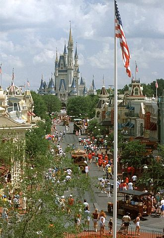
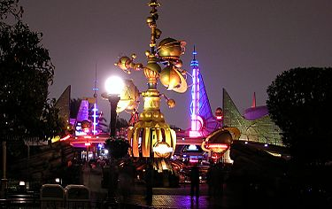
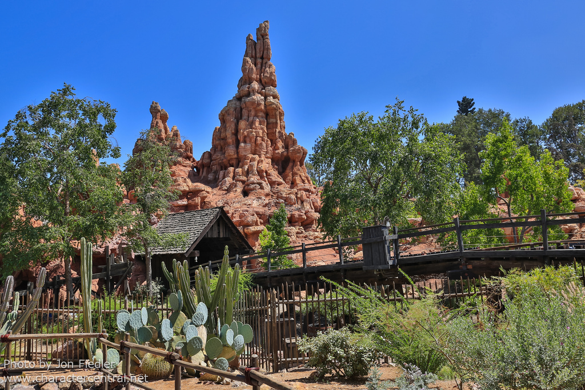
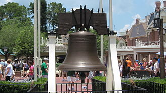
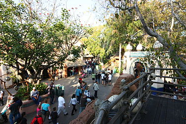
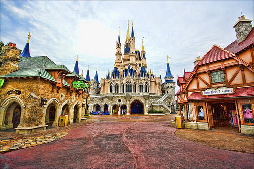
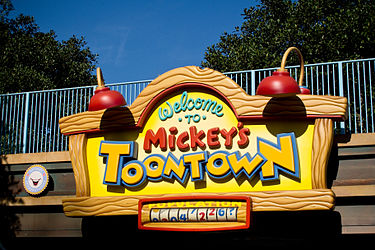

Main Street, U.S.A. |
Main Street, U.S.A. is the first "themed land" inside the main entrance of the many 'Disneyland'-style parks run by The Walt Disney Company around the world, except the currently in-construction Shanghai Disneyland Park. Each Main Street, U.S.A. (except Tokyo Disneyland) has a train station above the entrance. At Disneyland Park, Disneyland Paris and Hong Kong Disneyland, Sleeping Beauty Castle stands in the distance beyond the end of the street. The area near here is referred to as Town Square; most of the day, there are characters available for a meet and greet here. At the Magic Kingdom and Tokyo Disneyland, Cinderella Castle stands at the end. Town Square is home to City Hall, in which the Guest Relations office is located. Further along Main Street, the names painted in the windows on Main Street serve as credits for some of the many people, Imagineers and others, who contributed in some way to the creation of Disneyland. Largely they appear as fictional businesses (gyms, realtors, dentists), and they often refer to a hobby or interest that the person honored. Ub Iwerks's window, for example, refers to his prowess with cameras. For Disneyland's 50th anniversary, on July 17, 2005, a first-story window on each Main Street was unveiled with a dedication to all the cast members (employees) who had worked for Disney throughout the years. The streets are paved with resilient asphalt to prevent aching of feet. As of 2015, Disneyland will expand Main Street U.S.A. with a Main Street Arcade in honor of their 60th anniversary construction began in July. |
TomorrowlandTomorrowland is one of the many themed lands featured at five Disney theme parks around the world owned or licensed by The Walt Disney Company. Each version of the land is different and features numerous attractions that depict views of the future. Disneyland Park in Paris includes a similar area called Discoveryland, which shares some elements with other Tomorrowlands but emphasizes visions of the future inspired by Jules Verne. Walt Disney was known for his futurist views and, through his television programs, showed the American public how the world was moving into the future. Tomorrowland was the realized culmination of his views. In his own words: "Tomorrow can be a wonderful age. Our scientists today are opening the doors of the Space Age to achievements that will benefit our children and generations to come. The Tomorrowland attractions have been designed to give you an opportunity to participate in adventures that are a living blueprint of our future." It is this movement into the future that has, on occasion, left Tomorrowland mired in the past. Disneyland's Tomorrowland is now in its third generation, and the Magic Kingdom's Tomorrowland is in its second. The Walt Disney Company has mentioned that it wanted to keep Tomorrowland from becoming "Yesterdayland". As a self-referential joke along this line, the 2007 Disney animated film Meet the Robinsons (which is set mainly in the year 2037) features an amusement park called Todayland, which has rides that look remarkably like Space Mountain and Disneyland's original Rocket Jets. |
 |
Frontierland |
Frontierland is one of the "themed lands" at the many Disneyland-style parks run by Disney around the world. Themed to the American Old West of the 19th century, Frontierlands are home to cowboys and pioneers, saloons, red rock buttes and gold rushes. Every instance of Frontierland has a Big Thunder Mountain Railroad, and a stretch of riverfront. Other attractions sometimes found in this land include Big Thunder Mountain, the Country Bear Jamboree, Tom Sawyer Island and a steam-powered riverboat. |
Liberty SquareLiberty Square is one of six "themed lands" and is exclusive to the Magic Kingdom, a theme park at the Walt Disney World Resort in Lake Buena Vista, Florida. Themed after colonial America, replicas of both the Liberty Bell and Liberty Tree can be seen here. One of the most popular attractions in the Magic Kingdom, The Haunted Mansion, is located in this land. Presiding over the square is the Hall of Presidents, an American History show featuring an audio-animatronic figure of every President of the United States. Liberty Square has a long waterfront on the Rivers of America and the Liberty Belle Riverboat steam paddleboat departs from a landing here. The land affords excellent views of the river and Tom Sawyer Island in adjacent Frontierland. |
 |
Adventureland |
Adventureland is one of the "themed lands" at the many Disneyland-style theme parks run by the Walt Disney Company around the world. It is themed to resemble the remote jungles in Africa, Asia, South America, and the South Pacific. "To create a land that would make this dream reality", said Walt Disney, "we pictured ourselves far from civilization, in the remote jungles of Asia and Africa." Adventureland provides a 1950s view of exotic adventure, capitalizing on the post-war Tiki craze. Lush vegetation resembles jungles while elements of the "other" surround the visitor. Tribal performance masks, conga drums, non-American totem poles, exotic animal statues, and architecture of Pacific influence make for a confined area wherein industry and technology take a back seat to uncharted nature. Noted art historian David T. Doris explains Adventureland as, "a pastiche of imaginary colonial spaces, conflated within the green and foliate milieu of 'the Jungle.' |
FantasylandFantasyland is one of the "themed lands" at all of the Magic Kingdom-style parks run by The Walt Disney Company around the world. Each Fantasyland has a castle as well as several gentle rides themed after Disney movies. |
 |
Mickey's Toontown |
Mickey's Toontown is a "themed land" at Disneyland and Tokyo Disneyland, two theme parks operated by The Walt Disney Company. At Tokyo Disneyland, this land is named Toontown. A similar land existed at the Magic Kingdom until 2011 and was named Mickey's Toontown Fair. The attraction is a small-scale recreation of the Mickey Mouse universe where visitors can meet the characters and visit their homes which are constructed in a cartoonish style. It was inspired by the supposedly real-world location of "Toontown" from the film Who Framed Roger Rabbit (1988) in which cartoon characters live apart from humans. |